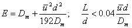
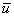
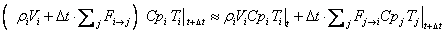

Although it is possible to use a time step as short as one second in CONTAM, this may not produce a more accurate simulation of transient concentrations because of the use of control volumes which are treated as well-mixed. For example, consider the sudden release of a contaminant at one end of a 10 m long zone with air flowing at a typical 0.2 m/s from the release point toward a doorway at the other end. It would take about 50 seconds for the contaminant to reach that doorway and begin entering the next zone. In the well-mixed zone model the sudden release will instantly produce a uniform concentration (equal to the mass released divided by the mass of air) everywhere in the zone, even at the far end 10 m from the source, and begins entering the adjacent zone within one time step.
The well-mixed zone model is appropriate when the time step is longer than the mixing time of the zone. Conventional HVAC systems attempt to produce well mixed zones, but the mixing time is on the order of a few minutes rather than seconds.
The standard numerical solution to this problem is to create smaller control volumes whose size is similar to the distance traveled in one time step. This is done in the computational fluid dynamics (CFD) models that consider mass, momentum, and energy in computing the flow field in a space that has been divided into many control volumes. Conventional CFD might divide a volume into 30 cells along each of the three directions. This increases the computation effort from one large "cell" per zone to 27,000 (=30×30×30) cells per zone. This analysis approach is not practical for a building containing many zones.
One-dimensional convection-diffusion flow has been introduced to CONTAM as a compromise between simple, and fast, well-mixed zones and a full CFD simulation. CONTAM 2.4 includes the option of modeling detailed contaminant migration in one, user-defined direction through a zone and or an entire duct system. This one-dimensional model is obviously appropriate for flow through a duct and reasonably appropriate for a long hallway or a zone using a displacement ventilation system. Its use in more conventional well-mixed zones is problematic because of the presence of supply air jets and areas of recirculation.
Contaminant flow in one direction consists of a mixture of convection, the bulk movement of air, and diffusion, the mixing of the contaminant within the air. CONTAM’s primary 1-D convection diffusion model is taken directly from the finite volume method developed by Patankar [Patankar 1980] and described in more detail by Versteeg and Malalasekera [Versteeg and Malalasekera 1995]. This model divides the zone into a number of equal-length cells and uses an implicit method (with a fast tri-diagonal equation solver) to guarantee stability in computing the contaminant concentrations. It has been observed that the accuracy of this method declines as the ratio of the flow velocity × time step to the length of the cell increases.
This loss of accuracy is a particular problem in the ducts where flow velocities can be quite high. CONTAM uses a Lagrangian model to handle high speed flows in ducts. In the Lagrangian model, air flowing at velocity u will create a cell uDt long at the inlet end of the duct segment and cause the cell at xj to move to xj + uDt during a time step of Dt. The length of the cell, Dxj, is unchanged. This process of adding cells at the inlet end of the duct and deleting cells at the outlet end handles convection exactly. During that time step the contaminant will diffuse between adjacent cells due to molecular diffusion and turbulent mixing. That diffusion is solved by a standard implicit method using a tri-diagonal equation solver.
The cell at the outlet end of the duct segment will not necessarily have an edge at x = L in which case an interpolation is necessary to compute the concentration at x = L, which becomes the input concentration to the next duct segment downstream. When two or more duct segments merge at a junction the contaminant concentration at the junction is the flow-weighted average of the concentrations at the end of each incoming duct.
High velocities produce long cells and, therefore, relatively few equations to be solved in a duct segment. At lower velocities more cells are required, and as the velocity approaches zero the number of cells approaches infinity. To prevent this, ContamX automatically switches to the Eulerian finite volume model when uDt is less than the user specified minimum cell length. This corresponds to the flow regime where the finite volume is most accurate.
The axial dispersion coefficient in ducts is computed from the following relations. For laminar flow (Re < 2000) the Taylor-Aris relation is used [Wen & Fan 1975, p. 127]:
|
 |
(12) |
where
E = axial dispersion coefficient [m2/s],
Dm = molecular diffusion coefficient [m2/s],

= average fluid velocity [m/s],d = duct diameter [m], and
L = length of duct [m].
The condition refers to a minimum length of duct for full development of laminar flow. Until another relation is found for undeveloped flow, equation (12) will be used for all laminar flows.
For turbulent flow E depends only on the Reynolds number, Re [Wen and Fan 1975, p. 149]:
|
|
(13) |
Duct Thermal Model
When performing simulations using the short time step method, a simple duct thermal model has been incorporated into the solution that may be implemented as an option to the user. This model addresses only convective heat transfer.
Conservation of thermal energy is analogous to the conservation of contaminant mass in a control volume:
(energy at time t+Dt ) = (energy at time t) + Dt •(rate of energy gain – rate of energy loss)
Replace the concentration terms,
 , in equation (8) with specific energy, CpiTi:
, in equation (8) with specific energy, CpiTi:
|
 |
(14) |
where
Cpi = specific heat of c.v. i, and
Ti = temperature of c.v. i.
This is done only for ducts because the energy in the moving air dominants the solution in a well designed and well built duct system. That is not the case for zones where conductive and airflow heat transfers are of a similar scale. This model ignores heat exchange with the ductwork and its transient impact. However, the model should still be a useful help in computing the draft of a chimney.